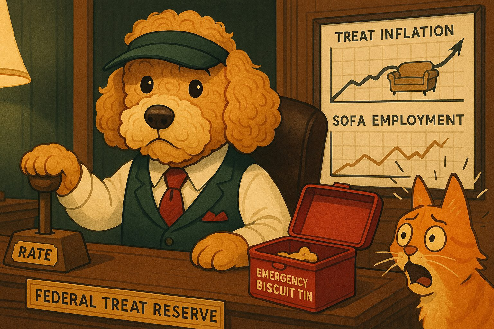

Doodle of Last Resort · $DOLR
The Doodle of Last Resort has arrived
Markets requested clarity. Monty requested a biscuit. An unofficial monetary-policy parody featuring the fictional chairdog of the Federal Treat Reserve.

Doodle of Last Resort · $DOLR
Markets requested clarity. Monty requested a biscuit. An unofficial monetary-policy parody featuring the fictional chairdog of the Federal Treat Reserve.

Meet the chairdog
Monty was appointed after falling asleep on an economic report and accidentally calming the market. He now oversees stable treat prices, maximum belly rubs and emergency biscuit liquidity.
His decisions are data-dependent. Monty is treat-dependent.
“The Committee remains strongly committed to price stability. Also, somebody said chicken.” — Barkward Guidance, Federal Open Market Canines
The mandate
Monty monitors the Treat Price Index and remains prepared to act.
Every good boy deserves full sofa employment.
When the market cat becomes disorderly, Monty activates the emergency biscuit facility.
The policy framework
Officially unofficial statements from the Chairdog.
Community votes on entirely fictional policy decisions.
An unconventional policy tool involving expanded biscuit consumption.
A community-generated report on economic conditions, squirrels and available sofas.
Launch facts
$DOLR launches as a fixed-supply ERC-20 paired with native ETH in a public Uniswap v4 pool on Robinhood Chain. The pool is created and funded in one atomic transaction at a disclosed starting price, and the full allocation — pool liquidity versus disclosed treasury — is published before launch.
Token information
| Name | Doodle of Last Resort |
|---|---|
| Ticker | $DOLR |
| Network | Robinhood Chain |
| Supply | 1,000,000,000 — fixed, no further minting |
| Pair | DOLR / native ETH · Uniswap v4 · no hook |
| Pool fee | 1% |
| Allocation | 90% pool liquidity · 10% disclosed treasury · LP locked 12 months |
| Contract | [Published at launch — verify on this site only] |
| Wallets | Deployer · treasury · LP owner — [published before launch] |
Crypto assets are volatile. $DOLR may lose some or all of its value. The token has no transfer tax; the pool’s 1% swap fee accrues to the disclosed liquidity position under Uniswap v4 rules, and all wallet activity is visible on-chain.
Community
The Committee does not coordinate purchases or prices. It creates memes, fictional forecasts, stickers, policy statements, economic explainers and Monty lore.
Weekly fixtures: the Treat Price Index, FOMC votes on fictional policy, Barkward Guidance press conferences and the Beige Bark report.
Risks & security
$DOLR is experimental and highly speculative. The token has no guaranteed value, redemption right, profit, yield, price floor or promised utility. Smart-contract, liquidity, market, regulatory, operational and cybersecurity risks may result in partial or total loss.
The official contract will be displayed only on this website and the project’s verified social account. Administrators will never: